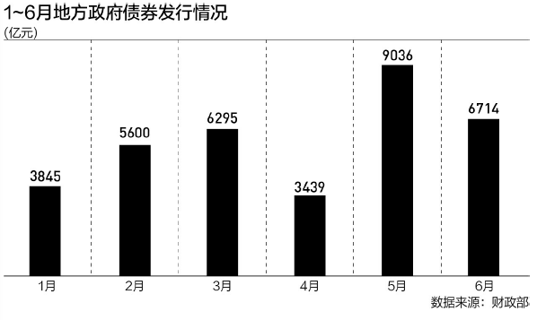

专家普遍预计，8月、9月、10月将是地方债发行高峰期。
地方借钱将提速，以支持重大项目建设，以稳投资稳经济。
公开数据显示，今年前7个月，全国发行地方政府债券约4.2万亿元，同比下降约16%。目前地方政府借钱的合法渠道是发行地方政府债券，在地方财政收支矛盾加大背景下，地方愈加依赖通过发债来为重大项目筹集资金。
而今年前7个月地方借钱速度慢于往年。7月底召开的中共中央政治局会议在部署下半年财政政策时，要求加快专项债发行使用进度。专家普遍预计，8月和9月地方债发行将明显提速，迎来今年发债高峰，发行规模在2万亿元左右，并加快债券资金使用，以发挥政府投资带动放大效应，推动经济运行在合理区间。
4.2万亿元花哪儿了
前7个月地方举债4.2万亿元，这笔巨额资金花哪儿备受外界关注。
根据公开数据，今年4.2万亿元地方政府债券中，再融资债券发行规模约2万亿元，新增债券发行规模约2.2万亿元。

上述约2万亿元地方政府再融资债券用途十分明确，即用于偿还到期政府债券本金或存量债务，即“借新还旧”，缓解地方偿债压力。
近些年地方债到期规模较大，叠加防范化解债务风险，再融资债券发行规模维持在高位，今年前7个月再融资债券发行规模与去年同期相当。
前7个月地方发行的约2.2万亿元新增债券中，新增专项债和新增一般债规模分别约1.8万亿元和0.4万亿元。新增专项债依然是新增债券中的主力，那么前7个月约1.8万亿元新增专项债资金投向哪些领域？
根据企业预警通数据，今年前7个月，新增专项债资金主要投向市政和产业园基础设施领域，这一规模占专项债资金总规模比重约34%；其次是投向铁路、政府收费公路、轨道交通等交通基础设施，占比约20%；另外专项债资金还投向棚户区改造（约9%）、医疗卫生（约7.5%）、农林水利（5.4%）等领域。
中国民生银行首席经济学家温彬表示，从资金投向看，基建领域仍是专项债主要发力点。1~7月发行的用于项目建设的新增专项债中，投向基建领域占比为68.2%，虽然比上半年略有回落，但比去年全年高5.1个百分点，继续保持较高水平。另外新增专项债用作项目资本金比重从上半年的9.5%进一步提高至9.6%，明显高于去年全年的8.1%，可以更好地发挥专项债“四两拨千斤”的效应，带动社会投资。
财政部综合司司长林泽昌近期在国新办发布会上介绍，今年将更多新基建、新产业等领域纳入专项债投向范围，专项债额度分配向项目准备充分、使用效益好的地区倾斜。
除此之外，特殊新增专项债发行也受到关注。
温彬认为，6月下旬以来，河南、新疆、陕西等地相继发行特殊新增专项债，截至7月底，特殊新增专项债披露发行总额已达2536亿元。有别于传统的新增专项债，特殊新增专项债不披露“一案两书”（项目实施方案、财务审计报告和法律意见书），募集资金不是用于项目建设，而是偿还存量债务。
他认为，这有助于缓解地方财政债务压力，但也弱化专项债对于基建投资的拉动作用。不过，考虑到当前能产生足够现金流的基建项目确实不足，且今年新增的1万亿元超长期特别国债将主要用于“两重”等项目建设，从而支撑基建增长动能，预计下一阶段特殊新增专项债或将继续发行，使财政资金得到更有效利用。
发债高峰将至
今年前7个月新增专项债发行规模同比下降约29%，是今年以来地方政府债券发行进度慢的主要原因。根据今年预算报告，全年新增债券额度约4.62万亿元，这意味着8月至12月将约有2.4万亿元新增债券待发行，其中新增专项债有2.1万亿元待发行。
而随着前述政治局会议再次强调要加快专项债发行使用进度，以及7月份部分地方债推迟到8月份发行，专家普遍预计8月、9月、10月将是地方债发行高峰期。
温彬认为，从各地公布的发行计划来看，8、9月新增地方债发行规模为1.36万亿元，加上0.56万亿元计划偿还规模，预计8、9月地方债发行规模在2万亿元左右，与去年同期基本持平。按此计算，四季度新增地方债额度还剩余1.11万亿元，或主要集中在10月份发行。
除了提高发债进度，用好债券资金并提高债券资金使用效益更为关键。
近期公开的《中共中央关于进一步全面深化改革 推进中国式现代化的决定》在部署深化财税体制改革时提出，合理扩大地方政府专项债券支持范围，适当扩大用作资本金的领域、规模、比例。
粤开证券首席经济学家罗志恒表示，目前教育、医疗等民生领域获得的地方专项债券额度相对有限。合理扩大地方政府专项债券支持范围，有利于挖掘符合要求的项目，促进债券资金更广泛地发挥带动作用，尤其是向公共服务领域倾斜，有利于缓解地方教育、医疗、基本养老等公共服务资金不足、公共服务质量不高等问题。
另外，近期公开的一些省份审计报告中，也揭示了一些新增专项债资金使用效益未达预期的问题。比如，一些项目前期准备不充分，项目推进缓慢；一些专项债资金闲置，增加资金成本；一些专项债资金用途不合规，一些专项债券项目建成后收益不及预期等。